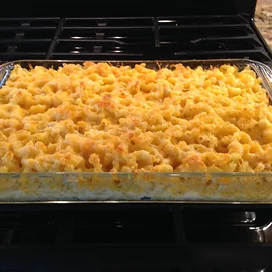

Baked Macaroni and Cheese

Description
A baked mac and cheese dish that'll make your guests
beg for seconds!
Ingredients
- 1 (16 oz.) package elbow macaroni
- 1/2 cup evaporated milk
- 2 eggs
- 1 (8 oz.) container sour cream
- 1 teaspoon seasoning salt
- 1/2 teaspoon black pepper
- 1 1/2 cups shredded cheddar cheese
- 1/2 cup grated Parmesan cheese
- 1 tablespoon butter
Steps
- Preheat oven to 350 degrees F.
- Bring a large pot of lightly salted water to a boil. Add pasta
and cook for 8 to 10 minutes or until al dente; drain and rinse
with cold water.
- In a bowl mix milk, eggs, sour cream, seasoning salt, and pepper.
Layer macaroni, cheddar cheese, and milk mixture until pan is full.
Sprinkle Parmensan cheese and pour melted butter on top.
- Bake in a preheated oven for 20 to 30 minutes or until milk
mixture is done.